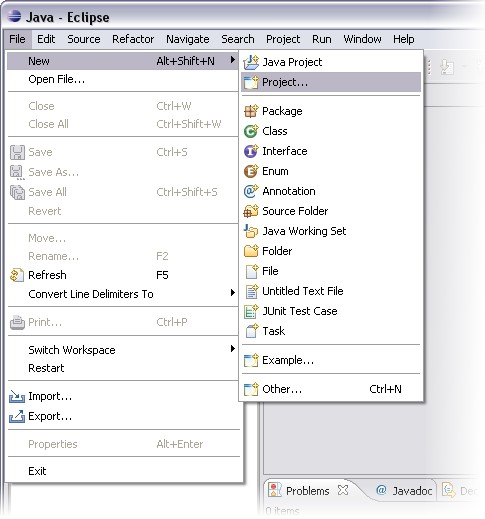
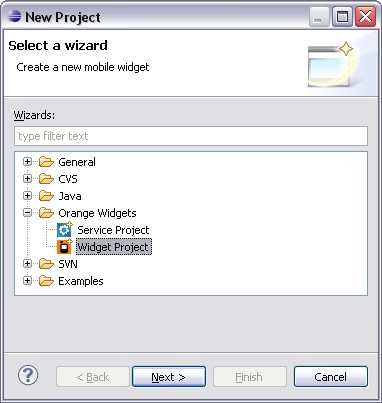
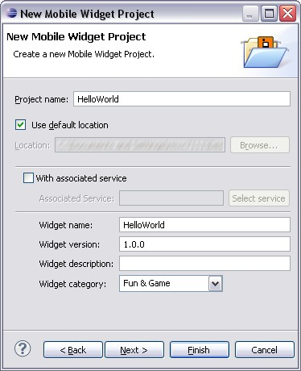
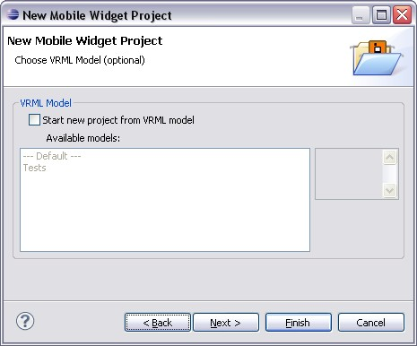
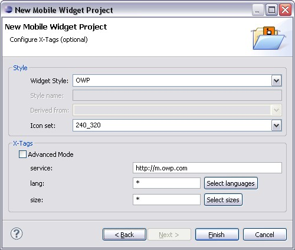
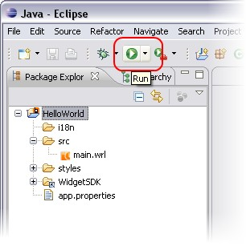

We start with a very simply project: The "Hello world!" project.
"Hello world" project display "Hello world" message.
To create a new project on Eclipse use the File > New > Project... menu.

Select a new widget project for Mobile Widgets (Mobile Widgets > Widget Project item in project tree).

Complete new project wizard.

Go to next wizard page (Next button).
The next page is the selection of project template. Keep the default configuration (don't use template).

Go to last wizard page (Next button).
On last page, complete information about application style. Keep the default configuration.

Finish the project creation (Finish button).
Your project is created.
Your new project have the following structure:
Details of project structure:
Open main.wrl file (in src folder) and copy/paste following VRML code in Eclipse editor.
Save the main.wrl file (use Ctrl + S shortcut).
Select your project on Eclipse.
Open Run menu and select Run item into menu (or press Ctrl + F11, or use the toolbar button).

Congratulation! Your project is launched.